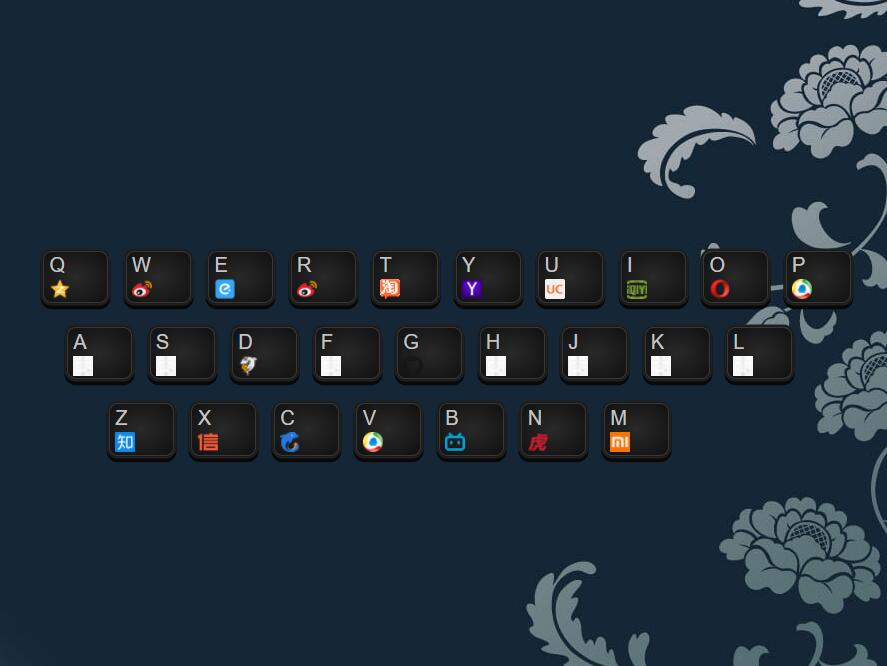

RS
card
关于
技能
作品
作品1
作品2
作品3
博客
博客1
博客2
博客3
日历
联系方式
其他
HELLO
陶思亮
前端开发工程师
年龄
18
所在城市
武汉
邮箱
taosiliang1127tsl@163.com
手机
132xxxx4080
到岗时间
2018
下载PDF简历
陶思亮：前端开发工程师
技能：前端开发，Node.js开发
技能
HTML5 & CSS3
JavaScript
jQuery
Vue
React
HTTP
作品集
